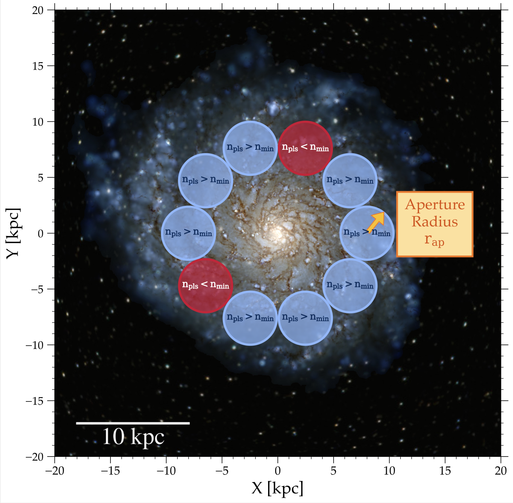
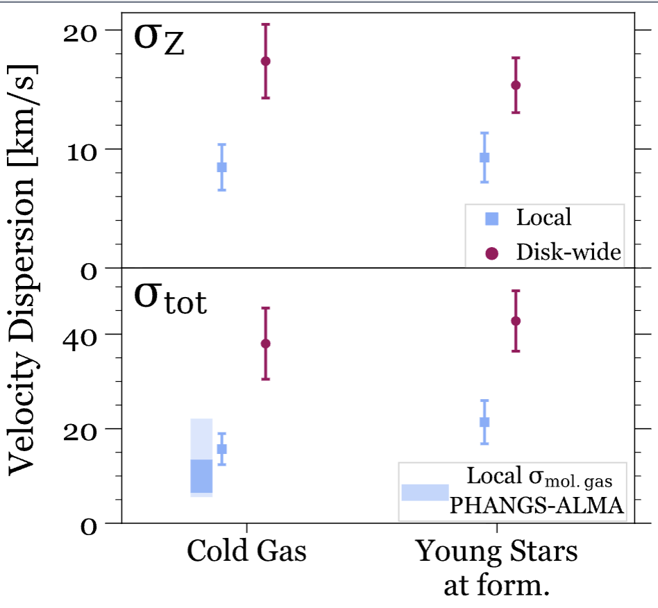
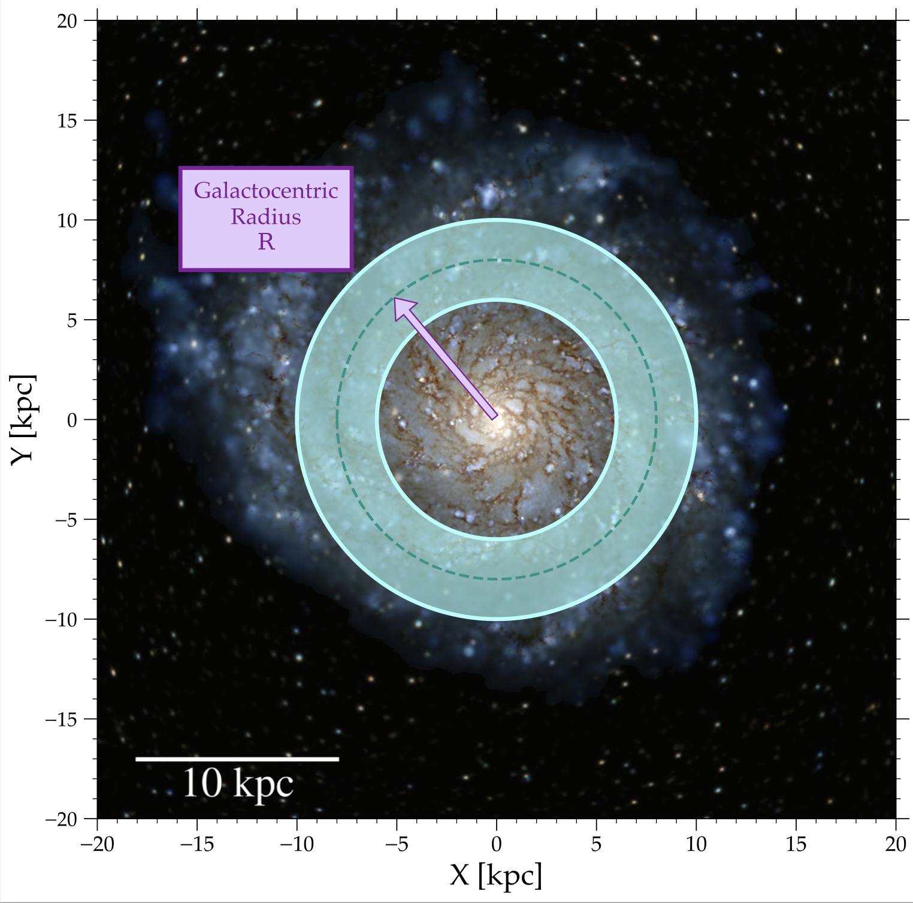

Velocity Dispersions on Equal Footing: Comparing Across Systems and Scales



Center Panel: Comparison of velocity dispersion, for a disk-wide versus local measurement, for cold dense gas and young stars. Specifically, σZ (top) and σtot (bottom) of cold (T < 300 K) and dense (n > 10 cm-3) gas at present (left) and young (age < 250 Myr) stars at formation (right). The points show the mean across all 14 galaxies, while the error bars show the standard deviation. Magenta circles show the dispersion of gas or stars within R = 6–10 kpc and |Z| < 3 kpc, identical to our previous analyses. The blue squares show the local velocity dispersion, within 150 pc patches, with cold gas patches centered at ≈4 kpc and young star patches centered at 8 kpc (see the text for a further explanation). The shaded region shows the total dispersion of molecular gas in 19 PHANGS-ALMA galaxies: light blue shows the sample’s full range, while darker blue shows the sample’s 16th–84th percentile range.
See McCluskey et al. 2024 for an initial discussion of local vs. annulus/disk-wide kinematics.
For a deeper dive into how measurement effects — including age uncertainties, aperture size, radial selection, and inclination — influence stellar velocity dispersions, see McCluskey et al. (2025).